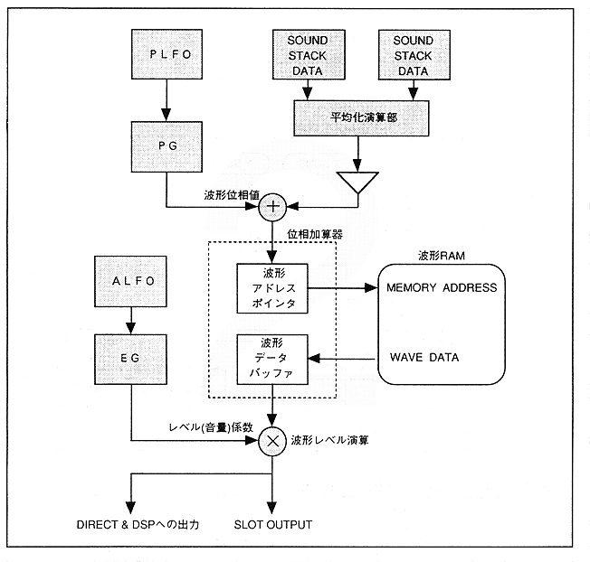

The FM sound source method is a method of modulating by adding the output of a different waveform generator to the phase input of a certain waveform generator. FM speech synthesis is realized by a waveform calculation unit called a slot.
Figure 4.18 shows a block diagram of the slot.
Figure 4.18 Slot block diagram
